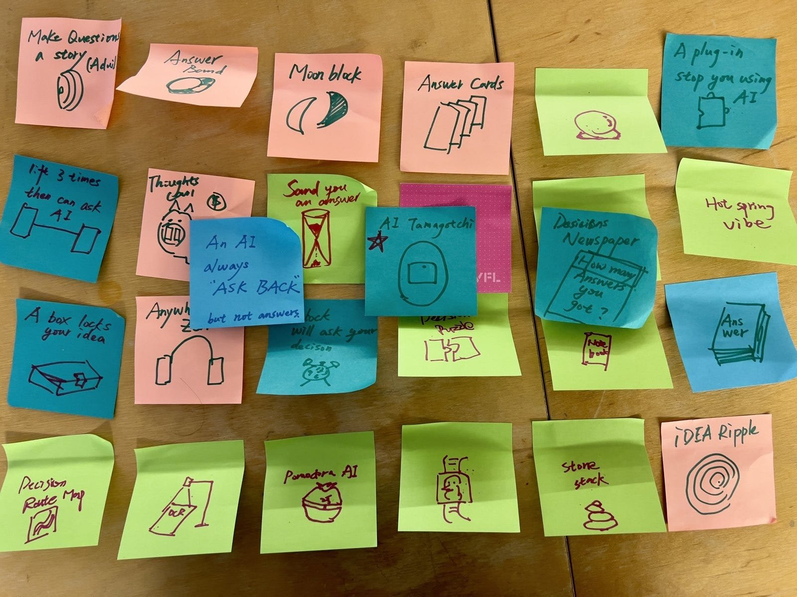
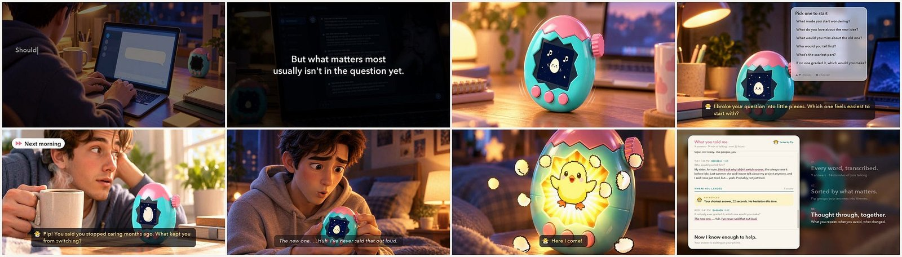
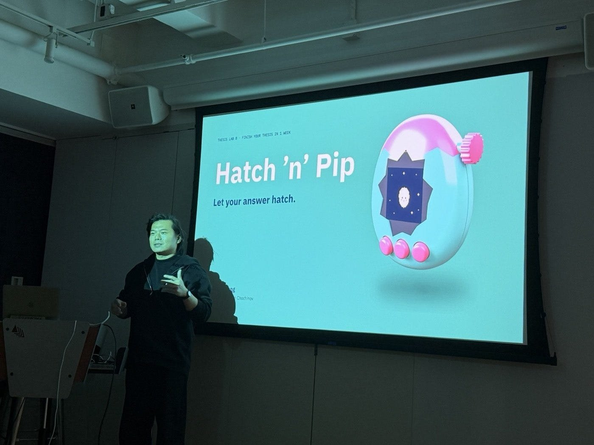
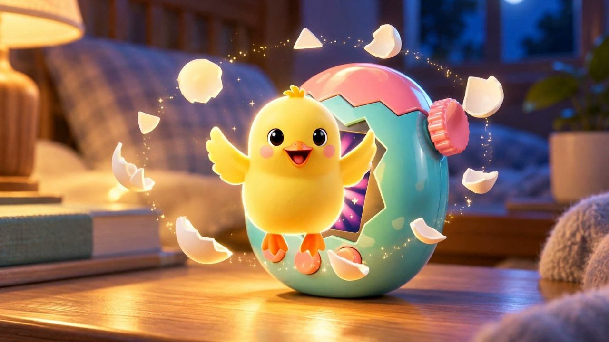
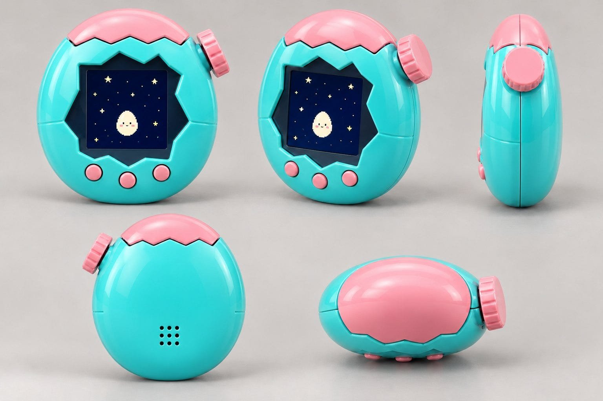

100 Sticky Notes and the Pitch I Didn’t Need to Make
Looking back on Thesis Lab’s one-week thesis assignment
This semester, Part B of Thesis Lab is taught by Allan Chochinov. His first assignment was called “Finish your thesis in 1 week”: take your whole thesis from idea to prototype in seven days. Step one was 100 hand-drawn sticky notes, each with a small sketch and a few words.
My first reaction was that this was crazy. It sounded almost impossible. In the past, a single assignment was enough to make me rack my brain, procrastinate, and wear myself down over and over.
But the way Allan set it up, sorting ideas by Users, Contexts, and Moments to spark the imagination, turned out to be a really good thinking exercise, almost a thinking game. Not every one of the 100 had to be perfect. The point was quantity. In class he told us to use one week to finish a thesis that would normally take ten or twenty weeks, and to imagine getting the whole year’s work done in that week. That feeling of lightness was really encouraging, and it made me want to challenge myself.
Once I actually started drawing, I realized there was no way to do 100 in one day. So I carried Post-its in different colors and a pen with me everywhere. Whenever something came to mind, I sketched it or wrote down a keyword. The ideas were simple, and some of them didn’t hold up to much scrutiny.
One came to me while I was taking care of my daughter, and I drew it on the spot. Another time, on the PATH train to school, from Journal Square to 23rd Street, I came up with more than twenty in a single ride. Usually I just scroll my phone on the train. I spent that ride thinking up twenty ideas instead. I found that really interesting: the same commute could be spent on something more meaningful than scrolling.

I also really like the way Allan critiques. He’s very direct, a little “mean,” as he puts it himself, and he’ll interrupt you at any moment. He says we’re living in a time when nobody dares to criticize anybody: teachers don’t criticize students, students don’t criticize each other, and nobody wants to say the hard things. He’s still willing to say them. I agree with him.
Once I had my idea, I wanted to challenge myself: could I turn this week’s work into an actual product pitch? So I decided to make a video. Allan had also asked us to keep it under three minutes and to talk as little as possible, so the idea could speak for itself. I made a two-minute video, and the whole deck was only three or four slides.
When the video finished playing, I was really happy with it. I used new technology, and I put a lot of my own ideas into it. AI was a tool here; it wasn’t answering for me. I was the human in the loop the whole way, reviewing and adjusting every idea, every creative choice, and every frame myself.

I was confident in the video. But during my presentation, after it played, I still wanted to sell it one more time. Allan cut me off. If I already had a great video and a rare ability, he said, why sell it all over again?
“You have this superpower that most humans do not have: you can make things look real that aren’t real, so that we can make a decision about whether we want them in the frame.”Allan, in class on October 22
That was a really good reminder. It made me think of my past work, where I was sometimes too eager to sell: the work could already speak for itself, and I still wanted to oversell it. So the critique wasn’t only about this assignment. It was also about a habit from my working life. From now on, as long as I’ve given it everything and the product or demo is done well, I don’t need to hard-sell it with my own words. That was one of my biggest takeaways from the week.

Finally, a bit about the idea itself. My thesis is about people and AI, and how AI’s answers shape our decisions. I’ve had a hypothesis for a while: a lot of the time, we use AI too casually and get an average answer, and that average answer leads us to make average, ordinary choices.
So I wanted to use a device to delay and stretch out decision-making, so people think it through in more detail. The way it works is that AI and the person prompt each other. That’s Hatch ’n’ Pip.

The process was a lot of fun. I used Codex to make a six-view turnaround, and in the end it all came together in that video.

I’m really satisfied with how complete this week’s work turned out. It was intense and challenging, and at the same time deeply satisfying. Over the week, I found myself in a flow state more times than I can count.